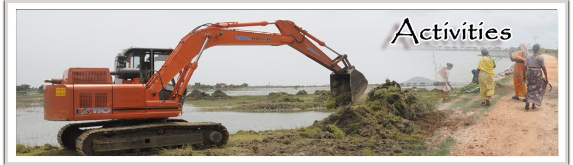
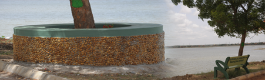

Activities |
|
DesiltingAround one-third of desilting has already been completed and work is on in full swing to complete the desilting process. The desilted mud/slush cannot be transported to a long distance as it entails huge cost and effort and so the same material is being used for creation of an island, a happy habitat for the birds, with grass cover and cherry trees. |
Deweeding
Based on the detailed technical discussion with the experts, deweeding was found to be a must. Deweeding is mainly required for south eastern part of about 10 acres, all along the bund up till 10 mtrs from the bund end. Deweeding has to be done manually. Partial deweeding has already been done. Once the deweeding is completed, regular chlorination is required at least once a month along the embankment. |
|
Creation of an Island
The deweeding would produce reasonable amount of silt extracted in the process which can be used to create an island in the SE part of the Lake which can become a natural habitat for birds of different types which are already available in abundance.
|

Tree Cover
Along with fungus free trees, small fruit bearing trees
and medicinal trees, shrubs and creepers should be
planted on the embankment area. Landscaping includes
sustainable green cover for full lake area. New types of
gates, benches, and litterbins would be placed. |